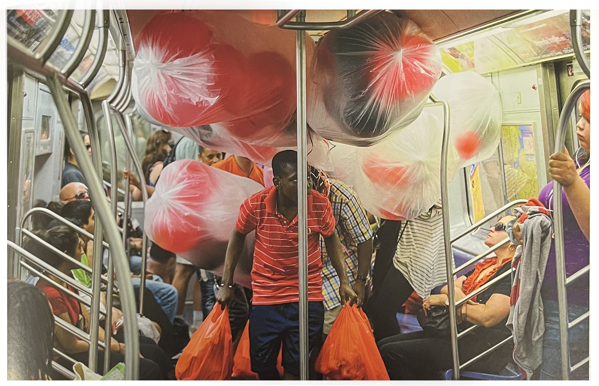
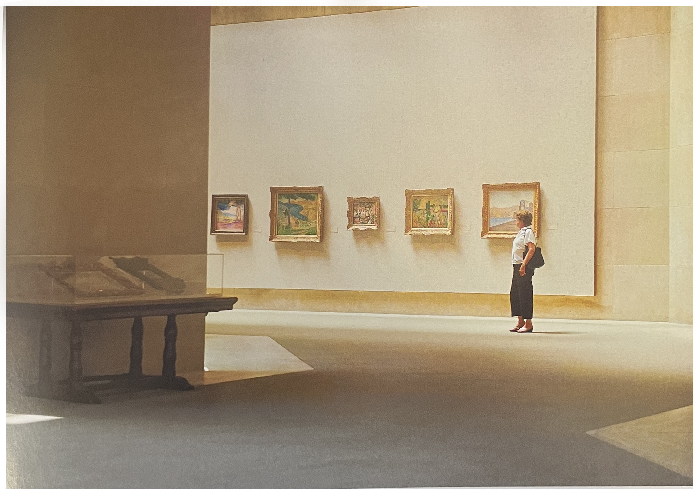

당신은 가끔 일을 하면서 당신의 의식보다 훨씬 더 아래에 있는 인식과 동기에 관한 것들을 익히고 있는 자신을 발견하게 된다. 아주 드물게 운이 좋을 때는 조금이나마 당신이 무엇을 하는지 알 수도 있겠지만, 대개 공적인 일과 사적인 동기 사잉의 연결고리를 찾기란 쉽지 않다. "나는 늘 내가 무엇을 하고 있는지 인식하려고 노력하지만 가끔, 그것도 아주 지독한 행운이 따를 때나 그걸 알아챌 수가 있습니다"라고 샘 아벨ㅇSam Abell은 말했다.
지하철 안에서 사진을 찍었을 때, 나는 그가 겪고 있는 걸 보여 주려고 했다. 사람들이 북적대는 틈에서 문이 닫히기 전에 모든 짐을 가지고 내려야 했던 그가 느꼇을지 모를 패쇄공포와 또 한편으로 몽환적이고 초현실적인 요소를 지닌 감정을 보여주고 싶었다. 나는 내가 이 사진 속에 단지 사람들의 제스처 외에도 그 공간이 주는 갑갑한 제스처까지 담고자 했다는 걸 나중에야 깨달았다. 그와 그 친구들 그리고 그의 풍선이 전부 내리고 난 뒤의 사진을 찍어두었더라면 이 사진과 대조를 이뤄 아주 멋있었을텐데, 그때는 미처 생각하지 못했던 것이 여러모로 유감스럽다.
풍선들
공간의 제스처 2[1]이 사진은 앞의 풍선 사진을 찍은 지 정확히 일주일 뒤에 뉴욕의 메트로폴리탄 미술관에서 찍은 것이다. 편짐과정에서 이 두 사진을 나란히 두고보니 두 사진에서 모두 공간으을 설명하는 제스처를 찾을 수 있었다. 당신에게서 너무 뻔해 보일지 모르겠지만 나에게는 새로운 발견이었다. 제스처나 사람이나 무생물울 정의하는 것뿐 아니라 공간 그 자체의 느낌을 전달할 수도 있다는 사실 말이다. 물론 갇혀 있는 지하철의 수많은 잍파 장면에서의 느낌, 그리고 미술관에 홀로 선 한 여성의 고요, 안정감 그리고 자유가 느껴지는 완벽한 호화스러움에는 전혀 다른 세계가 존재한다.
작은 사각형들에서 풍겨져 나오는 사진의 분위기를 인식하는 것과 유사하다.
메트로폴리탄 미술관
[참고문헌]
[1]빛, 제스처, 그리고 색light, gesture & color, 제이 마이젤 지음, 박윤혜 옮김, 시그마북스, 2015.3.2
....
....
....
....
....